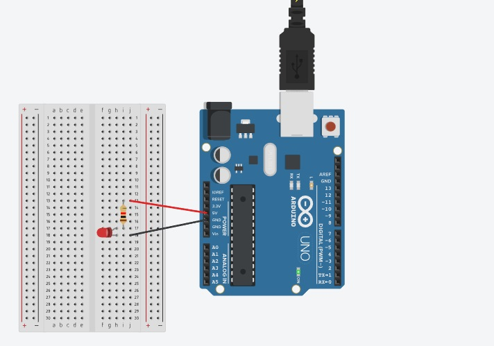

<!DOCTYPE html>
<html lang="pt-BR">
<head>
    <meta charset="UTF-8">
    <meta name="viewport" content="width=device-width, initial-scale=1.0">
    <title>Programação do Arduíno</title>
</head>
<body>
    <link rel="stylesheet" href="style.css">
</body>
</html>
<h1>simulação da programação com o arduino e texte na pratica</h1>
<br>
<p>neste texte simulado utilisamos um led vermelho, um resistor coma a configuração da resistencia em 220, uma placa de ensaio, 3 fios  e o arduino ,usamos ambos os materiais tanto para o teste pratico quanto o teste simulado.
    foi feito uma simulação de um pisca led ou seja uma simulação de um led piscando de 1 em 1 segundo, foi feito a simulação e o texte na pratica.
</p>
<div>
    
</div>
Fonte:Tinkercad
<div>
    
</div>
<br>
<p>como foi dito anteriormente replicamos a simulação em um texte pratico utilizando os mesmos materiais e os codigos no arduino IDE</p>
<div>
    
    
</div>


